Prizm Labs
Carousel · visual + audio
- 11posts
- 18scenes
- 22objects
- 57moves
Real trip footage, AI made only from real photos of me, and lifelike 3D objects, cut as one loop. The piece is pinned; every part of how it was made is a post below. Tap in.


Pinned · a visual + audio mix
Carousel.
“Life is a game, a loop, you define yourself.”
to Gotts Street Park — Lost & Found


The making of
11 posts · tap one
 Prizm LabsCarousel
Prizm LabsCarousel


 Prizm LabsCarouselPrizm LabsCarousel
Prizm LabsCarouselPrizm LabsCarousel
 Prizm LabsCarousel0312 sheets · 7 in 3DPrizm LabsCarouselPrizm LabsCarouselPrizm LabsCarouselPrizm LabsCarouselPrizm LabsCarouselPrizm LabsCarouselPrizm LabsCarousel
Prizm LabsCarousel0312 sheets · 7 in 3DPrizm LabsCarouselPrizm LabsCarouselPrizm LabsCarouselPrizm LabsCarouselPrizm LabsCarouselPrizm LabsCarouselPrizm LabsCarouselFrames from the piece
Every scene, in order.
One still per scene, straight from the final cut. Scroll sideways.


The making of · 01 · The personas
Six of me, a few frames each.
Iconic photos, re-made with me in them from real photos of me — then animated. Each one flashes on a kick. Times are on the video's clock.
The making of · 02 · Motion control
Same move, any outfit.
My real clip drives the AI: it copies every movement, frame for frame, in whatever I'm wearing.
One real frame, seven outfits.
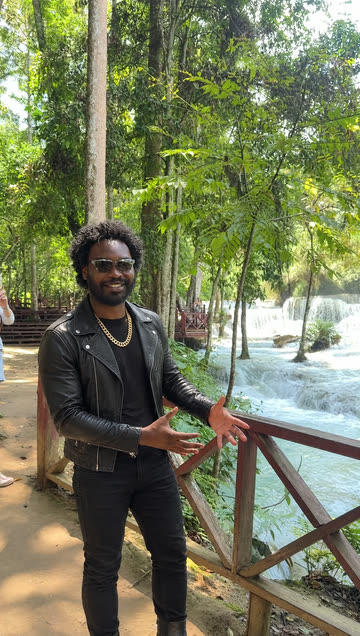
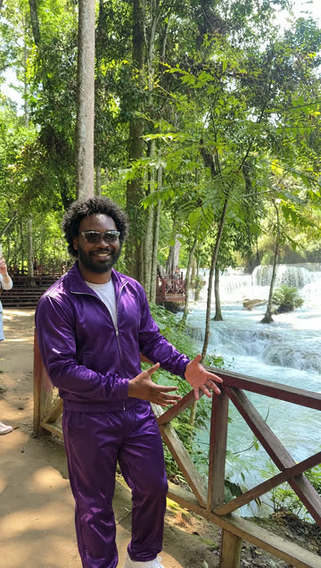
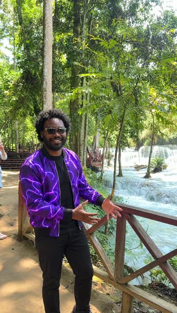
The making of · 03 · The character sheets
Locking my face.
One identity, rebuilt from a real September selfie, so every AI shot is the same man. Every item he wears is locked to one real version: one pair of glasses, one pair of shoes, the band on the left wrist.
The identity — big afro, full beard
turnaround, angles, details, light, colour
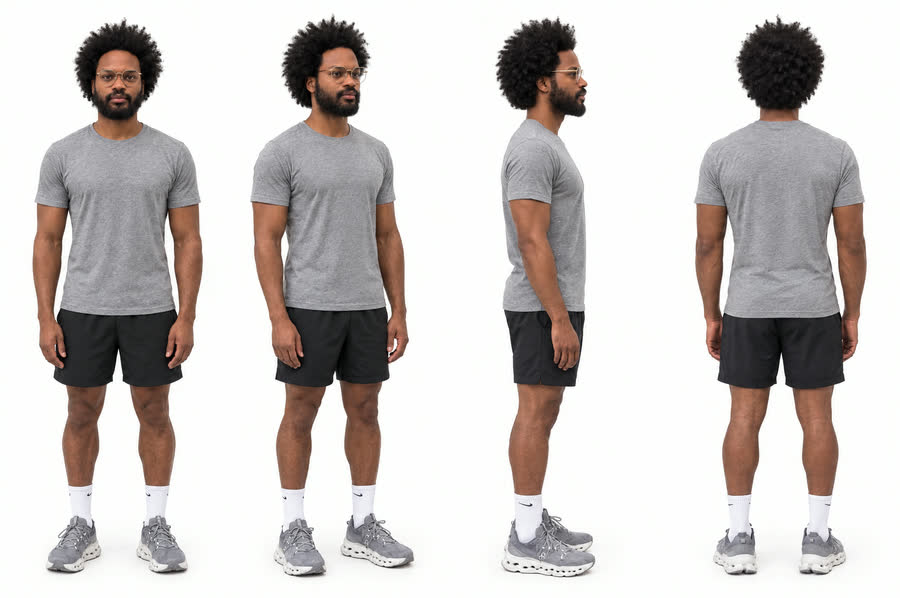
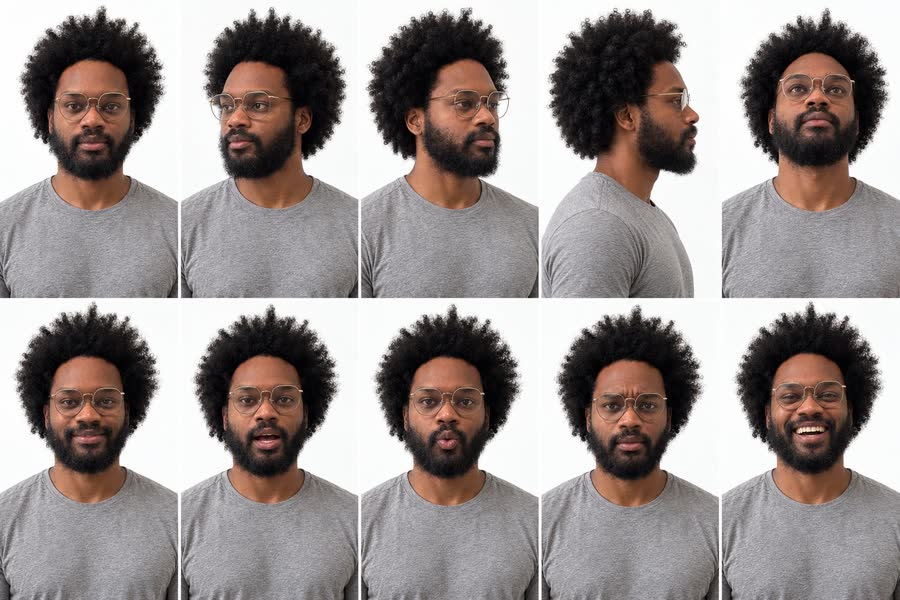

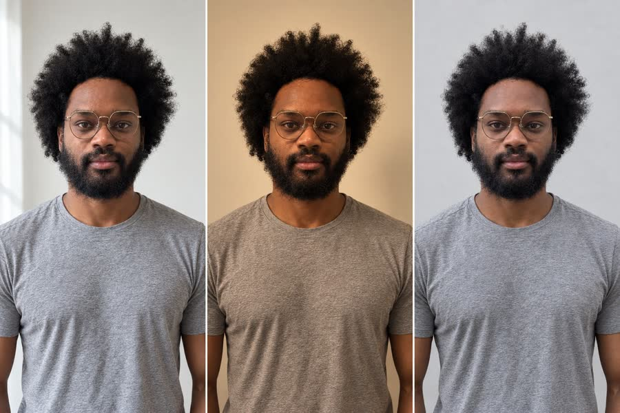
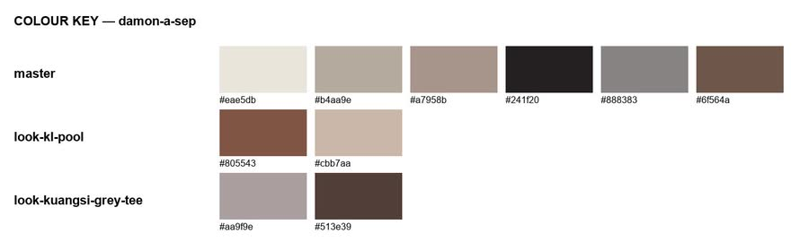
The character bible
every item he wears, locked to one real version and built in 3D · drag any of them
The looks
every outfit made from the same identity
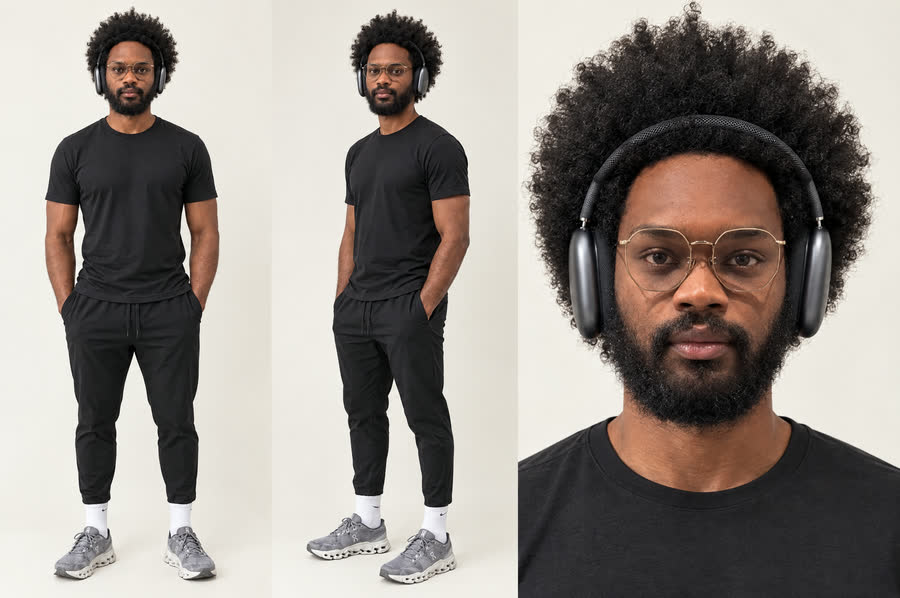
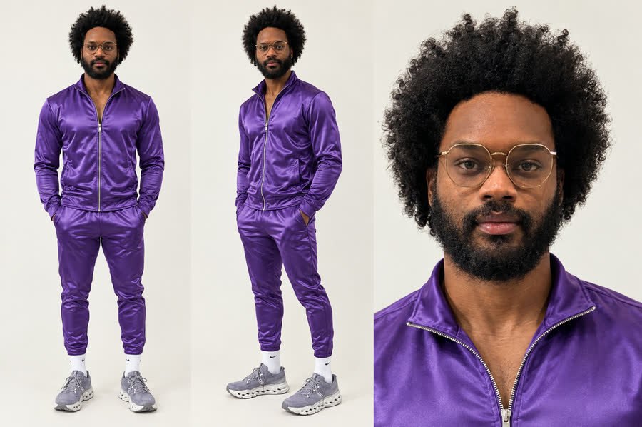
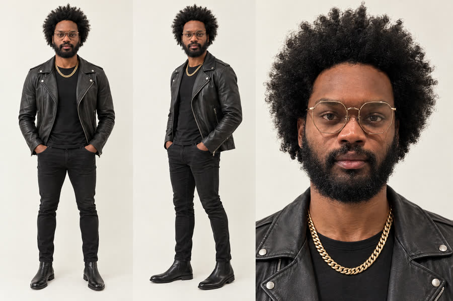
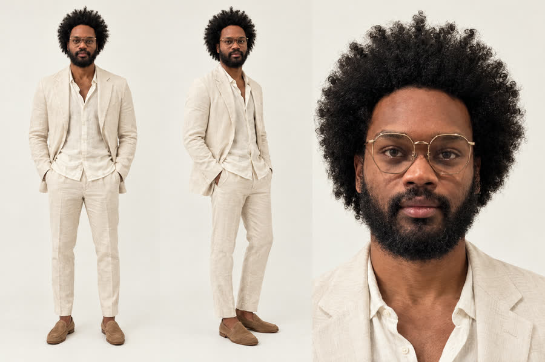
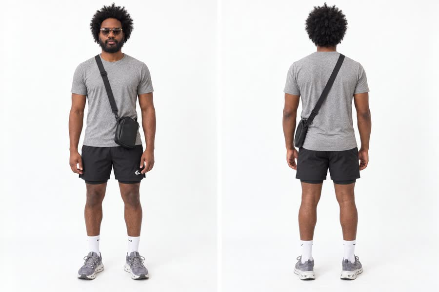
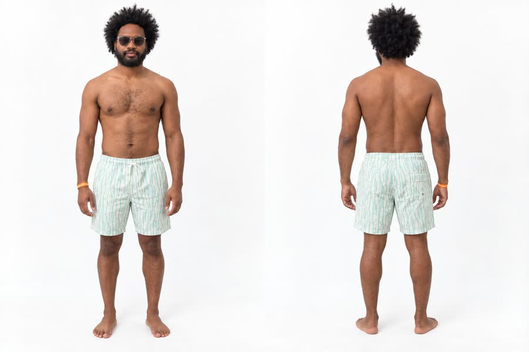
The making of · 04 · The objects
Ride the carousel.
Every object in the piece, built in 3D and seated on one carousel. Drag to spin it.
Koi — swims through the iris
Every object, on its own.
rendered with the same lifelike finish as the video · drag any of them
The making of · 05 · The edit
Every layer, on one clock.
The 42.3 seconds as they are built: the picture, each layer stacked on top of it, and, frame by frame, how the picture is treated and how everything moves. The speed line drops below zero where a shot runs backwards. Play the video and the line runs across; tap anywhere to jump there.
0:00.0
- Real footage
- AI video
- 3D
- Screen recording
- Outfit swap
- Persona flash
- 3D object · dot = it hits the lens
- Camera move · diamond = turn at the cut
Loading the edit map…
Scroll sideways along the map · hold a block for its detail on desktop
The making of · 06 · The vocabulary
Every move, by name.
The words editors use for what happens in the piece, each one shown on the moment it happens. Times are on the video's clock.
Cuts
Transitions
Time
Motion
Tracking & compositing
Sound-led
Camera
Not in the piece yet
Demos, not in the video: the same words shown on our own footage and objects.
The making of · 07 · The sound
Twelve bars, taken apart.
The loop is 12 bars of the song, split into stems and re-cut on the bar lines. The shaded bars are the remix.
Loading the stem map…
Press play on the loop below and a playhead runs across it · scroll sideways on a phone
- Bars 5–6 · double timethe music plays two bars in the space of one
- Bar 7 · spacethe music drops out; drums and voice carry it
- Bar 8 · reversed swella bar played backwards, rising in
- Bar 9 · the breakthe kick drops out
- Bar 10 · drums returnthe kick comes back in
The stems.
The making of · 08 · How it was made
Footage in, a loop out.
- Real footagePhone clips from the trip — the base of every shot.
- TrackingEach clip's camera move is tracked so 3D can sit inside it.
- 3D objectsBuilt in Blender with lifelike materials.
- AI shotsGPT Image 2.5 stills, Seedance 2.5 motion, Genjutsu motion transfer.
- The editCut on the kicks, turns around the subject, jump cuts.
- The song12 bars split into stems and remixed into a loop.
Bonus · The memes
Two memes, starring me.
Made the same way as the piece: real photos of me, rebuilt with AI, then animated. Tap one for sound.
Credits
- Made by
- Prizm Labs
- Music
- Gotts Street Park — Lost & Found
- Footage
- Shot on a phone, Thailand and Laos, 2026
- AI
- GPT Image 2.5 · Seedance 2.5 · Higgsfield Genjutsu
- 3D
- Blender · three.js · light map from Poly Haven (CC0)
- Sound
- Demucs stem split · Rubber Band time-stretch
Up next